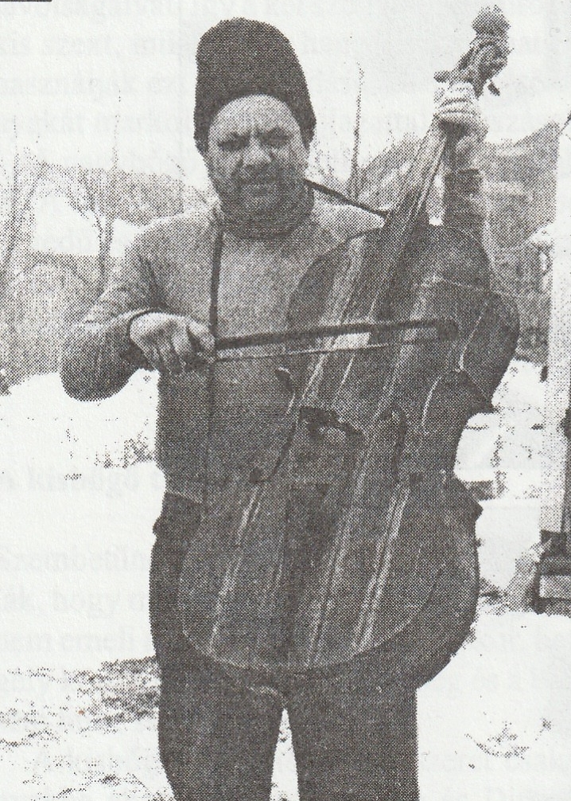
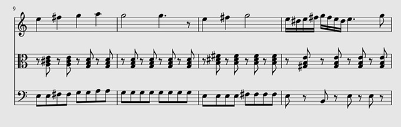
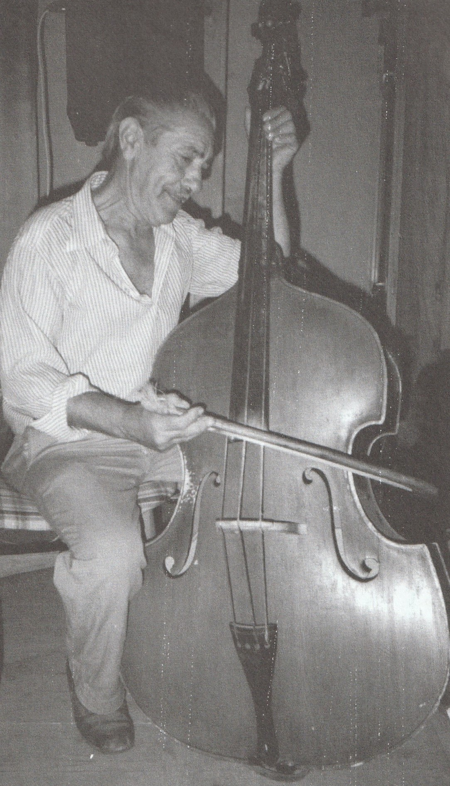

A kisbőgőt tekinthetjük az első igazi vonós basszushangszernek, mely elterjedt a magyar nyelvterületen. Megjelenése a cigányzenekaroknál a XVIII. századra tehető. Ugyanazt a szerepkört töltötte be, mint a nagybőgő, de jóval annak elterjedése előtt. Nagyméretű rokona elterjedése hatékonyan szorította ki ezen hangszereket, de nem mindenütt hagyták elfeledni őket. Erdélyben és Szilágy megyében még a XX. század végén is hallható volt olyan banda, ahol a nagybőgő helyet kicsit használtak, sőt, nem is nagyon tudtak, vagy akartak az utóbbin játszani, még ha volt is rá lehetőségük.
A hagyományban egységesen kisbőgő elnevezésű hangszerek leggyakrabban a klasszikus zenében használt gordonkát jelöli. Erdélyben így nevezik a cselló és a nagybőgő méretei közé eső, házi készítésű utánzatokat is. A kisbőgők több hangolásban voltak jelen a hagyományban. A továbbiakban azt vizsgálom, hogy a különböző hangolás milyen mértékben hatott ki a játékmódra, és annak mely területeit érinti.
A gyári gordonkát szinte soha nem találunk mind a négy húrral a falusi zenészeknél. Gyakorta a hangolást sem tartották meg, és inkább a bőgőhöz hasonlóan kettő vagy három, kvart távolságra hangolt bőgőhúrra cserélték. Ezen hangszerek lényegében semmiben nem különböztek a házilag készített bőgő utánzatoktól, kisbőgőktől. Nem is lenne értelmes ezeket külön választani egymástól, hisz tulajdon képpen csupán a korpusz különbözik, semmi más.
Ugyanakkor mégis érdemes különbséget tenni a kvart és a kvint hangolású hangszerek között, hisz játékmódjukban eltérnek egymástól. Az egyszerűség kedvéért előbbit kisbőgőnek fogom nevezni, utóbbit csellónak. Továbbra is hangsúlyozom, hogy ezen terminusok a korpusztól függetlenek, kizárólag a hangolás és a játékmód mássága miatt élhet e szisztéma.
A halmosdi „gorduna”
A halmosdi származású Haraga Florian, kinek a hangszerén két húr volt kvart távolságra, egy g és egy d. Lényegében a bőgő két magasabb húrja, azonban attól eltérően a g volt a jobb oldalán a hangszernek, pont fordítva, mint a legtöbb jobb kezes hangszeren. Minthogy a vonót a jobb kezében tartotta, így nem a balkezességgel magyarázható ez a kialakítás, mind inkább talán valamiféle helyi szokással. „Elmondta, hogy mindig kisbőgőn (gordonkán) játszott, amit Halmosdon gorduna-nak neveznek…” .
Haraga Florian halmosdi kisbőgős (Új pátria)
Hangok tekintetében a régies játékstílus volt jellemző. Nem az akkordok alaphangjait játszotta, hanem a dallam pillérhangjait követte. Leggyakrabban a g húron játszott. Gyakran váltott fekvéseket. A húr alaphangjának oktávját üveghangként használta, melyet gyakran érintett, egyben ez is volt a legmagasabb hang amit lefogott. Ezt gyakran váltogatta az üreshúrral. A nyak tövéig használta a fogólapot, afölé csak az üveghangért nyúlt. A d húrt ritkán érintette, és még ritkábban fogott le rajta hangot, általában csak váltóhangokat, azokat is csak alsóbb fekvések esetén.
Vonás szempontjából csak szaggatott dűvőt használt, azt valamennyi tempóban, a brácsával együtt. Állítása szerint az esztamot bánsági műfolklór darabok terjedésének köszönhetően ismerkedett meg.
A vonó, melyet használt házilag készült. Vonókezelésén jól megfigyelhető, hogy valamennyi tánc esetén minden második nyolcad dinamikája nagyobb volt. A gyorsabb tempójú táncoknál ez sokkal erőteljesebben hallatszik, de a lassabbak esetén is megfigyelhető ez a törekvés. Utóbbiaknál hangsúly közti zenei hang hangereje jóval kisebb, már-már olyan benyomásunk is lehetne tőle, mint ha megállítaná egy pillanatra a vonót, azonban erre csupán a rară alkalmával van példa. Ez a fajta visszahalkulás a második hangsúly kiemelésére szolgál.
Az egy vonóra vett két nyolcad hangsúlyt gyakran osztja el külön vonókra, azonban gyakoriság szempontjából ez inkább díszítő, hangulat fokozó elem, mintsem permanens jelenség.
Halmosdon tehát a basszushangszer alapvetően egy gordonka formáját ölti. Hangolása a nagybőgő két magasabb húrjának felel meg, fordítva felszerelve. Játékmódja archaikuságát jelzi a dallamhangokat nagymértékben követő basszus játszása, illetve az esztam vonás alkalmazásának hiánya.
A széki „gordon"
Széken mindhárom bőgőnek, vagy gordonnak nevezett hangszer fellelhető volt, igaz, nagybőgőt Szabó István „Púpos” bőgőse, Moldován Károly használt. Korábbról Tatár Károly „Pina” balkezes gordonosról lehet tudni még, aki használta. Fizetség fejében kapta. Leggyakoribbak azonban a kisbőgők voltak. Ezekből megtalálható volt a gyári gordonka, illetve az otthon barkácsolt változat is.
A „kisgordont” leggyakrabban szintén 3 húrral szerelik fel, melyek azonban kvint távolságra állnak egymástól C, G és d hangolással. Húrhiány esetén csak a két mélyebbet rakják fel, esetleg C, F kvart hangolásra váltanak. Új keletű szokás, hogy nagybőgő húrokat tesznek a kisbőgőre is. Dobos János így nyilatkozott erről:
"Akkor nem ilyen vastag húrral volt, hanem a kicsi bőgőnek húrjával, három húrral. Ezt nem bírja oda felemelni , ahová kell. Most aztán egy darabtól nincs is ilyen húr, már kicsibőgő húrok. Hiszen erre az jár, nem ilyen vastagok. – És miért nem tesznek kisbőgőhúrt a gordonra? Azért is, hogy nincsen is. Nincs olyan ereje. Már itthon nagyon nagy erő kell a taktushoz, hogy szóljon a bőgő. Azért teszek ezt a húrt. Vastagot. De akkor szólott az is nagyon jól, mert azt bírta oda emelni, ahová kellett’ – Hány húrja kell legyen a kisbőgőnek? ’ Vagy hármat tudok. Már most úgy látom, elég kettő is. Éppen úgy, mert mindenkinek csak kettő van. Még az Icsánékén is csak kettő, egy vékonyabb, s egy vastagabb.

Ádám Sándor két húrral felszerelt gordonkán
Csellón a húrlábat kis ívben faragják meg a húrsík miatt. A d húr a G-n játszott alaphang kvintját játszották egyszerre, felerősítve a hangzást. Ritkán használták önmagában, és csak dallamtöredékek játékára. A G és C húr esetén hasonló elv működik.
Általában markolva fogják le a hangokat. Ujjbeggyel fogják le a hangokat. Húrváltáskor a csuklót forgatják, így a magasabb húrokon gömbölyűbb, még a mélyebbeken laposabb fogás alakul ki. Az ujjvégek közvetlenül közvetlen a húr mellett helyezkednek el, így nem a klasszikus zenében használatos billentést alkalmaztak, hanem egy kényelmesebb megoldással éltek, mellyel fel is tudták emelni a hangszert. Zenélés közben gyakran változtatták az elhelyezkedést, ezért is volt e fogásmód oly célszerű.
A jobb játékosok már fejlettebb fogásmódot használtak. Laposan billentve teszik ujjaikat a húrra. Húrváltásnál lent maradnak a korábban fogott hangnál az ujjak, így stabilizálva fogást, és fekvést.
C húron általában nem mennek 4. fekvés fölé, G és d-n pedig csak harmadikig mennek. Ez alól csak a dallamjáték kivétel. A kisbőgősök visszanyúlhatnak a mutató ujjukkal fekvésen belül, amely fogásmód a klasszikus zenei gyakorlatban is előfordul, ugyanakkor szokták a kis ujjukat is hasonló képpen lefelé nyújtani, ami viszont csak a falusi zenei szokásrendszerben maradt fent és itt is ritkán élnek vele.
A kisujj használata kisebb mértékű, mint a többié. Ilyenkor általában a mutatóujjukat nem teszik le, kényelmi okból. Kettősfogásban az ujjak nem merőlegesen, hanem már-már párhuzamosan kerülnek a húrra. Cifrákban néha balkéz pizzicatot alkalmaztak.
Üres húrok használatakor a szabadon maradt balkezet más, nem zenei tevékenységre használják.
A balkéz játékának finomságait a széki nép nem értékeli, nem törődik vele különösebben. Csak a ritmus számít.
De igen buta a széki nép a zenében. Nagyon jó munkás nép , mezőre, sántierra, ilyesmikre. Nagyon jó gazdászok. De ebbe, a zenében nagyon buta nép. Nem tudja megértékelni. Itten csak ippeg az {a fontos}, hogy hallszódjék a gordon, szóljon erősen, s a gordonos legyen becsületes, ne igyék, s ippeg ott üljen a padon. Akkor nagyon! Első osztályú… Ilyen marha a széki nép. Ő nem tudja mi a jó. (Ádám Sándor)
A kézfej oldalirányú kitérései a hangsúlyozást szolgálják. Az alkar testsíkra merőlegesen mozog. Feladata a csukló emelése, húrok nyomása, felkar erőinek koncentrálása. A felkar mozgásai zártak, szűkek, oldal irányú elmozdulásai még húrváltáskor is minimálisak. Csak nagy hangsúly esetén jelennek meg oldal irányú mozgások, akár csak a vállnál.
Menetben közel függőlegesen tartják. Ebben a helyzetben első és második fekvést használnak általában. Széken a legelterjedtebb a későbbi időkben az álló játékmód volt. Ha azonban a tánctér mérete lehetővé tette, akkor ülve játszottak rajta.
Két nagy csoportja van a helyi díszítéseknek, cifráknak: ritmikai és melodikai.
A ritmikai cifrák közé tartozik, mikor az egy tánctípushoz használható vonásnemeket a tánchoz és a dallamhoz idomítva, illetve hangulatfokozóként váltogatják.
A másik a sorzárások, melyek különböző ritmikai képletek, melyek vagy a dallamot követik, esetleg a táncot, amennyiben nem az alap ritmusnál hosszabb, kitartott hangokról beszélünk, hanem összetettebb képletekről. A harmadik ilyen kisebb alcsoport az ún. „aprózások”, melyek ritmusvariációk nyolcad, tizenhatod értékben illetve pontozott és élesritmusok játszásában nyilvánul meg. Ezek nem kifejezetten sorzárásnál jelennek meg. Gyakorta sor közepén kezdik és akár a következőbe is átlóg. Gyakorta nem is kijátszott zenei hangok, hanem a vonóval a húrra ütve játszák ezeket. Nem egyszer még a szíjjal is cifráztak, mellyel a nyakukba vették a hangszert.
A Másik nagy csoport a melodikai cifrák, melyek eszköztára limitáltabb, nem oly látványos, mint az előző halmazé. A dallam ritmusát alávetik a kíséret szabályainak, fő hangsúlyok fő hangokra. Leggyakrabban csupán a dallam egy-egy pontján kapcsolódnak be annak valós játékába és rövid ideig. Nagyon ritka az ellenszólam játéka és ez is rövid részlet csupán az egészet tekintve. Főleg a harmóniákban jelenlévő hangokkal cseréli fel az alapot. Dallamjáték főleg a strófikus szerkezetű, régi stílusú lassú, magyar, vagy csárdás dallamokban van jelen a gordon játékban. Csak a csárdások némelyikében található az ellenmozgás, közkedvelt fordulatok esetén.

Dallam részlet széki csárdásnál (Lajtha 1941, Ferenczi Márton „Zsuki” és zenekara, Gr094Ba)
Vonásnemeket meghatároz az indulás karaktere. Általában a kápától indul, de csúcstól indított vonásnemmel is találkozhatunk. A valódi különbség, hogy hangsúllyal, vagy anélkül történik a vonóindítás. A hangsúlytalanul induló vonások tenuto szerűek. ezek a vonások a csárdásban, magyarban, porkában, verbunkban, lassúban, kisebb mértékben a sűrű és ritkatempókban, illetve díszítésként a hétlépésben is megjelenhet. Lényege, hogy a vonó már a hangsúly előtt mozgásban van a húron, egyfajta előkészítést adva a hangsúlynak. E vonással jobban segítik a kontrást, folyamatos hangzás jön létre. Nagy a dinamikai játék lehetősége.
A hangsúllyal kezdődő ezzel ellentétben kevesebb dinamikai játékot tesz lehetővé és az alap hangereje sem olyan magas. Martele jellegű vonás.
E vonásnak egyik alfaja az ún. trimba, mely egy ostorcsapás szerű mozdulattal kezd az indítással ellenkező irányba, ezzel egy kis előkét adva a hangsúlynak, mely ennek köszönhetően nagyobb dinamikájú lesz. Leggyakrabban a sűrű tempónál alkalmazzák ezt a fajta vonást, mintegy szétszedve a brácsa dűvőjét. Ilyenkor a brácsa vonásának első hangsúlya kapja az előkét, mely a csúcstól indul, az előke után pedig kápa felé tart, ahol a hangsúly már előke nélkül történik meg és az ezt követő hang is rövidebb az újabb vonóindításig.
Dűvő esetén kettő, vagy esetleg több hangsúly kerül egy vonóirányra portato szerűen. Egy hangsúly rögtön az indítás pillanatában szól, a második vonóhossz közben. a két hangsúly kisebb dinamikájú, hangsúlytalan vonásszakasz tagolja. a Második hangsúly után a vonót meg kell állítani, hogy a vonó irányváltásakor megszólalhasson az újabb. Széken e vonásnak leggyakoribb előfordulása a tempókban, illetve a magyarban történik. Lassabb és gyors formája létezik a településen, de csak szaggatott formában. Folyamatos változatát nem alkalmazzák itt.
Mindig a hídhoz közel játszanak, ritkán jönnek feljebb. Játék alatt a szőr és a láb távolsága a hangsúlytól függően változik. Hangsúlynál közelebb, ellenkező esetben kicsit távolabb vannak tőle. Állandó fortissimo-n muzsikálnak.
A vonásokkal kapcsolatban nem tartom szükségesnek a további ismertetést. Általánosságban elmondható, hogy a bőgősök törekedtek arra, hogy eszközük folyamatosan szóljon, a hangsúlyok közt is hallhatóak legyenek. Ez többé-kevésbé egész Mezőségről elmondható függetlenül a bőgő méretétől. Széken a cselló és kisbőgő között játék stílusbeli különbség nem igazán fedezhető fel, ami a jobb kezet illeti. Egy két vonás használata tér el a két basszushangszer közt százalékosan az egyes táncok kíséreténél, például a magyarban gordonkán nagyobb arányban használták a dűvőt min a hangsúlytalanul induló vonást.
Összességében látszik, hogy széken a balkéztechnikán és a hangoláson kívül érdemi különbség nem látszik a gyári és az otthon készített kisméretű bőgő funkciójú hangszerek közt. A bőgőkre általános jellemző kvart távolságra hangolt hangszerek esetében nem látunk semmi különbséget, legyen a korpusz házi készítésű másolat, gyári gordonka test, vagy jutalomként kapott nagybőgő. A kvint hangolású eszközök esetében sem túl nagy a különbség. lényegében annyi történik, hogy az alaphang fölé játszák annak kvintjét duplafogással.
Jobbkéz technika illetve vonások tekintetében nem látható jelentős differencia. Bizonyos vonások gyakorisága változik a két különböző hangolású hangszer között.
A hangolásból fakadó játékmódbeli eltérések a nagy egészet tekintve csekélynek mondhatók. Nem látszik jelentős eltérés bőgő és cselló közt.
A kalotaszegi bőgő
Kalotaszeg tájegység igen sokszínű néphagyománya nagymértékben fogadta be az újabb zenei stílusokat, de a felszínt lefejtve még megtalálhatóak a megmaradt régies elemek, melyek kirajzolják e táj arculatát. Jelen alfejezetben nem csupán egy faluban található eszközökről lesz szó, hanem a tágabban értelmezett Kalotaszeg egészét vetem alá vizsgálatnak. Itt is megtalálható volt mindhárom bőgő funkciójú hangszer még a gyűjtések idején használatban. Jelen volt a házi készítésű kisebb méretű bőgőutánzat, akárcsak a gyári gordonka és a nagybőgő is. Mi most továbbra is a kisebb méretű egyedekre fókuszálunk ebben a fejezetben.
A gyűjtések idején megtalálható volt még mindkét méret. A kisbőgőn két fajta játékmód volt jellemző. Az egyik során, akárcsak széken duplafogással az alap kvintjét is hozzáfogták. A másik esetén, akárcsak a széki kvart hangolású kisbőgő esetén, mindig az alapot fogták, nem fogtak kvintet rá. E mellett ez a játékmód műfajonként változhatott is. Vonások, jobbkéztechnika területén jelentősebb különbségek itt sem található a kisebb méretű basszus hangszerek közt.
Itt is többségében 3 húrral felszerelt hangszereket találunk kvart vagy kvint távolságra egymástól. A nagybőgő a területen a gyűjtések idejére már nagyobbrészt meghonosodott, ennek ellenére gyakran felváltva használták kisebb méretű társával, az alkalomhoz mérten, ahol volt erre lehetőség. Voltak olyan zenészek is, akik nagybőgőn nem játszottak, ezért, maikor elhozták őket Magyarországra és a saját hangszerük helyett nagybőgőt kaptak, elég bátortalanul játszottak rajta. Amikor, viszont gordonkát kaptak a kezükbe, magabiztosan tudták kezelni az eszközt. Ez is azt jelzi, hogy a területen még igen élénken élt a cselló, mint eredeti basszushangszer.
Nagybőgő mellett legtöbbször állva, kicsinél székre állítva illetve ülve játszottak, vagy szíjakkal nyakba akasztva. Utóbbi esetén a játékos testéhez képest kb. 100-120 fokos szögben elfordítva állnak a húrok. Hasonló volt a székre letámasztott megoldásnál is. Ülő játékmód esetén a nagyobb méret esetén az egyik lábat a has elé, a másik a hát mögé helyezik. Cselló használatakor a két sípcsont közé szorítják a hangszert és kicsit balra döntik.
A vonó fogása itt kétféle a rövid, házilag készített vonónál: az egyik a már széki játékmódnál leírt franciakápás fogásmódhoz hasonlító marokfogás. Talán ez a leggyakoribb. A másik viszont inkább a klasszikus, németkápás vonófogásra hasonlít. Ilyenkor a hüvelykujj illetve a mutatóujj a pálca felett helyezkedik el. A gyűrűsujj a pálca és a szőr közt hajlik rá a kápára. A középsőujj vagy a mutatóujj mellett helyezkedik el, vagy a gyűrűsujjnál, attól függően, mekkora a vonó pálcája és szőre közti távolság a kápánál.

Berki Ferenc „Árus” rövid vonó tartása német fogásmódhoz hasonlít.
A balkezükkel, hasonlóan a székiekhez, marokkal fogják le a hangokat. Kvint hangolású hangszer esetén a jobb játékosok kinyitják az ujjaikat, hogy elérjék a vezetőhangokat, illetve a fölötte fogott hangot (gyakran szimplán a vezetőhang kvintje, de néha egy kis szeksztnyi távolságot fognak, mely a klasszikus összhangzattan szabályainak jobban megfelel), illetve egy-egy hiányos akkord lefogásánál.
Nagyjából a 3. fekvésig nyúltak fel, annál följebb csak nem mentek.
A hagyományos zenei életre általában elmondható, hogy a bőgősök játszott hangjainak helyessége másodlagos a ritmushoz képest. Ez Kalotaszegen sincs másképp. Itt is a ritmus volt a fontos, a hangokra nem annyira figyeltek. Ugyanakkor érdemes megfigyelni, hogy ahol tehetségesebb bőgőst foglalkoztattak, ott milyen megoldásokkal, eszközökkel él a zenész.
Erre az egyik kiváló példa Berki Károly kisbőgős, aki az 1969-ben készült magyarvalkói táncfilmen szerepel Varga Ferenc prímás, és Bunyi József kontrás mellett.
Nála hallható megoldások a bal kézben igen fejlett játékmódra utalnak. Ennek egyik legjellegzetesebb változata, amikor a kontrán lefogott domináns szeptimakkordnak a tercét (vezetőhangot) és alapját fogja le egyszerre és ezzel a hiányos hangzattal lép a dominánsszeptim szerinti tonikára. Ehhez a mozgáshoz csupán csak a felső húron fogott ujját kell átcsúsztatnia az alsóra.
E mellett másoknál is hallható a D - dúr esetén az a megoldás, hogy a G húron egy Á hangot, d húron pedig egy fisz hangot fognak le, így egy alap nélküli D-dúrt kapunk. Ez megjelenik a magyarlónai Kovács Györgynél, mérai Berki Ferenc „Árusnál”, illetve Berki Károlynál is sokszor hallható. Nem játszanak hasonlóan képpen másik akkordot, csak ennél az egynél figyelhető meg ez a jelenség.
Bizonyos esetekben elhagyják a felső kvint lefogását, és csak az alapot játszák. Ilyenkor leggyakrabban a C és a G húrt használják, utóbbin nagyjából c-ig csúsznak fel. Kovács Györgynél ez a keservesek játéka során figyelhető meg. Erre nagyjon jó példa a pakulárnóta, amikor is keserves tétel során csak az alapot játsza, majd a gyors tételnél az alap kvintjeit is lefogja már. Hasonló képpen cselekszik a szászfenesi Múza Károly is. Ő is csak a kötetlen ritmusú daloknál hagyja el a felső kvint használatát Nonika Miklós magyargyerővásárhelyi prímással készült 1992-es felvétlen, a korábbiakkal ellentétben már a csárdásnál elhagyja a duplahúros játékmódot.
Vonások és jobbkéz technika szempontjából a kvart hangolású kisbőgő és kvint hangolású cselló közt alig van különbség.
A csárdás alatt folyamatos lassú dűvőt szinte sosem használtak. Minden hangsúly külön vonóirányra esett. A leggyakoribb vonásnem a hangsúlytalanul indított, hangsúlyba érkező vonás volt, melyet mindenütt használtak. E mellett hangsúllyal indított változat is, mely esetén a hangsúlyt kitartott hang követi egészen a vonóirányváltásig. Ez a vonás inkább a kvinthangolású csellóknál volt gyakoribb, azon is elszórtan. Főleg Berki Ferencnél és az 1963-ban Topaszentkirályon rögzített Boldi Puiu mellett hallható ismeretlen csellósnál hallható utóbbi vonás.
Szaporánál az első negyedre egy hangsúlytalanul induló vonást tesznek, mint egy elrugaszkodásként, az ezt követő három negyednél a játékos csak pattogtatja a vonót. A húrra való érkezés adja a hangot, mely ezáltal igen rövid, gyakran nem lehet megmondani a hang magasságát. Hogy ez a képlet mennyire állandó, vagy változó, az a zenész ízlésén múlik. Berki Károly ritkábban emeli ki dinamikailag az ütem első negyedét, nem mindig indít „merített” vonással. Ő nem minden ütem elejét indítja „merített” vonással. Berki Ferenc ezzel szemben jóval variatívabb. Ő díszítésképpen rövid ideig minden páratlan számú negyedre hangsúlytalanul indítottat játszik.
Kovács Györgynél figyelhető meg, hogy amikor Farkas Ferenccel játszott együtt, aki háromhúros kontrát használt, és egyszerűbben, csak dúrokat fogva kísért, a szaporát nem esztammal, hanem gyors dűvővel kísérték. Ez nem volt általános, egyes esetekben volt ez így a felvételek tanúsága szerint. Ilyenkor a bőgő nem dűvőt játszott, hanem a hangsúlyokat külön vonóra választotta, már-már pattogtatva játszott. A korábbi pattgotatástól eltérően azonban egy kicsit hosszabb és nyolcados mozgású.
Legényes esetén már találkozunk dűvővel, például a már említett topaszentkirályi felvételen, de nem volt elterjedt kisbőgőn. Legtöbbször külön vonóirányokra vették a hangsúlyokat. Az ügyesebb bőgősök itt is játszották a trimbát, mely során egy előkét követően a csúcstól induló hosszabb hangsúly után egy visszarántással csatlakozik a második, mely rövidebb. A széki változattól eltérően, a területen elmondható, hogy ez a vonás jóval „tapasztottabb” és kevésbé érezhető aszimmetria adott vonó irányonként. A hangsúlyok közti rész dinamikája nagyobb, nincs olyan nagy mértékben elválasztva mint Széken. Ennek köszönhetően a hangsúlyok kevésbé emelődnek ki. Érdemes megemlíteni, hogy Berki Ferenc ezt a vonást fordított irányokkal használta. Nála a Kápánál volt az előke és onnan indult a hosszabbik hangsúly a csúcs irányába. Ez annyiban módosította a hangzást, hogy az előke kicsit hosszabb, mint a másik esetben.
A román táncok esetén szintén a brácsa vonását szedték szét külön vonókra, vagy maradtak ők is a dűvőnél. Berki Károlynál megfigyelhető, hogy a román ritka legényest a kontrától eltérően, már-már csárdás szerűen (attól nyilván gyorsabban), vonóindításkor hangsúlyozott vonózással kísér. Ezt csak tőle hallottam eddig, ő azonban következetesen mindig így csinálta.
Kvart hangolású hangszer esetén a bal kéz csupán az akkordok alapjait fogja, vezetőhangokat, ritkábban meneteket is játszhat. Jobbkéz technikában nincs jelentős különbség a két hangolás között. Főleg egyes vonások használata, illetve egyes díszítések esetén van jelentős elválás.
Különféle cifrákat, díszítéseket itt is használtak, főleg ritmikai szempontból. Melodikai cifrákat kisebb mértékben találunk, ez köszönhető annak is, hogy Kalotaszegen már inkább funkciós kíséretet hallhatunk, illetve ahol megmaradt a dúr mixtúrás akkordfűzés, mint például Magyarlónán Farkas Ferencnél vagy a gyalui Viski Rudi zenekarában, ott is a bőgős nagyobb részt már a kontra akkordjainak alapját játsza, és nem tér ki rövid időre sem dallamjátékra.
Ritmikai cifrák sokszínűsége ugyanakkor személyenként változó. Leginkább a legényeseknél lehet megfigyelni a sor végi lezáró ritmusképleteket, melyek kis eltérésekkel, de mindenütt jelen vannak a területen. Ezeket a kíséret együttesen valósítja meg. Csárdásnál lehet hallani legritkábban ritmikai díszítéseket, aprózásokat, szaporánál változó. A legjátékosabban Berki Ferenc „Árus” játszott. Ő valamennyi tánc kíséreténél használ lezáró képleteket, aprózásokat illetve vált vonásokat.
Természetesen itt is gyakori, hogy vonóval ütik a hangszert, illetve annak húrjait.
Kvart hangolású hangszer esetén a bal kéz csupán az akkordok alapjait fogja, vezetőhangokat, ritkábban meneteket is játszhat. Jobbkéz technikában nincs jelentős különbség a két hangolás között. Főleg egyes vonások használata, illetve egyes díszítések esetén van jelentős elválás.
Összefoglalásként látható, hogy a korábbiakhoz képest itt már jelentősebb játékmódbeli eltérések figyelhetők meg a két hangolás között. A nyilvánvaló kettős fogásos játék mellett itt már hiányos akkordokat is használtak a csellón, és nem csupán az alapot és kvintjét fogták le. Ez markáns különbség a korábbiakhoz képest.
Kisbőgő egyéb területeken
A kisbőgő más területeken a gyűjtések idejére már jórészt kiveszett a használatból. Az idősebb zenészek ugyan még emlékeznek azokra az időkre amikor még jelen volt a zenekarban. Erdélyben Magyarpéterlakán több zenész is beszámolt a cselló korábbi jelenlétéről Csiszár Aladár elmondása alapján ismerték és használták a csellósok a trimbát. A területről fennmaradt egy felvétel, melyen Ötvös Ferenc játszik hegedűn és Luka János csellón, ebben a felállásban. Itt a cselló teljes egészében a kontra szerepét veszi át, vonásaiban sem tér el attól. Hiányos akkordokat játszik főleg az a és d húron, egyetlen adat lévén nem tekinthető azonban hitelesnek. Sajnos egyéb más nem maradt fent a területen működő kisbőgő játékstílusáról, így azt továbbra sem ismerjük.
A Maros - Küküllő vidékén is találkozhatunk olyan felvétellel, melyen kisbőgőt használtak. Az adatok hiánya sajnos itt sem engedi, hogy messzemenő következtetéseket vonjunk le. Martin György 1969-es magyarlapádi gyűjtéséből látható hangszer cselló, de hangolása nem ismert. A játékmód alapján kvart hangolás a legvalószínűbb. Gyakorta váltogat az alap és annak alsó dominánsa között. Jól hallhatóan a ritmus volt fókuszban a bőgősnél. Ritkán találta meg a dallami hangot, nem is törekedett rá. A pontozó során az alapot váltja alsó, vagy dominánsával nyolcad mozgásban. minden nyolcad külön vonóra kerül. A csárdásnál gyors dűvőt használ, azonban hangsúlyai nem egyeznek meg a kontra hangsúlyainak helyével. Szaporánál esztamozik a kíséret.
Erdélytől nyugatabbra már nem találkozunk olyan adattal, amelyen a kisbőgő, vagy cselló még régi, bőgőfunkciójában működik.
A Galga mentén nagybőgő valószínűleg a csellót váltotta, az után jött divatba. Ezt több helyi cigányzenész is alátámasztja, kiknek a dédapja mesélte, hogy régen e területen is hegedű-cimbalom-kisbőgő felállásban muzsikáltak. A vidéken a csellót ezt követően már nem túl gyakran használtak. Ahol megmaradt, ott inkább a városi cigányzenekarok csellistáinak mintájára inkább kitöltő funkcióban működött, mint sem az akkordok basszusát adja.
Lajtha László soproni gyűjtésén ugyan csellót találunk nagybőgő helyett azonos funkcióban, ám nem lehet néprajzilag hiteles adatként kezelni, hisz a felvételen szereplő zenekar nem volt aktív része a környék néphagyományának.
Csupán régi fotógráfiák és metszetek tanúskodnak a kisbőgőkről a bartóki első három dialektus területéről.
Cigányzenei felhasználás
A városi cigányzenekaroknál, ugyanúgy, mint a néphagyományban eleinte csak kisméretű bőgőket, csellót használtak a bőgő funkciójában. Később, ahogy elterjedt a nagybőgő, a cselló új szerepkört kapott. Gyakran a dallamot játsza egy-két oktávval mélyebben, esetleg azt kvint párhuzamban követve. Másszor a kíséretet erősíti egy-egy helyen erősebben meghúzott kettősfogással. Gyakorta a basszus szólamot egészíti ki. Legnehezebb feladata a rögtönzött ellenszólam játszása a kísérő harmóniák keretein belül. Egyes esetekben szólót is kaphatnak.